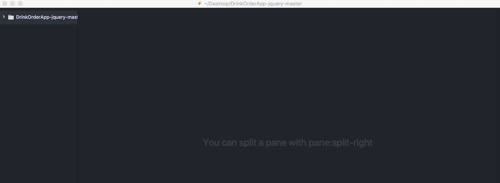
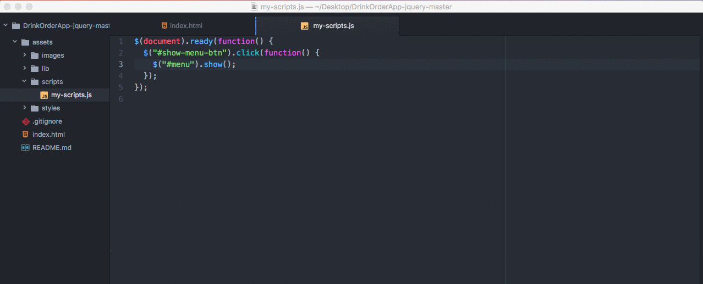

#
Part 2: Showing and Hiding Content with jQuery
Setup
If you don't want Version Control practice or don't know what Version Control is, just start with step 1 below.
If you were at the Version Control session in April and would like to practice your Git skills, expand the section below and follow the steps.
Fork the repository from https://github.com/KansasCityWomeninTechnology/DrinkOrderApp/tree/jquery-master to your own GitHub Account.
In iTerm2 or Git Bash, use your command line skills to
cdyour way to your CodingAndCocktails directory.In iTerm2 or Git Bash,
git clonethe repository inside your CodingAndCocktails directory.In iTerm2 or Git Bash type
git checkout jquery-masterto switch to the appropriate branch.Jump in on step 4 below.
Grab a mentor if you need some support as you do this!
In Google Chrome, navigate to https://github.com/KansasCityWomeninTechnology/DrinkOrderApp/archive/jquery-master.zip to download the project starting point.
Unzip the downloaded file and place the unzipped folder in your CodingAndCocktails directory that was created during your tools setup.
Rename the folder from DrinkOrderApp-jquery-master to just DrinkOrderApp.
In Atom, open the DrinkOrderApp folder by opening the File menu and choosing Add Project Folder. Navigate to the unzipped DrinkOrderApp folder and click OK.
In Google Chrome, open the index.html file and try clicking the buttons. Not very exciting yet, is it?
You can open the file in Google Chrome in three ways:
Open Google Chrome then choose Open File... from the File menu
Find the file in Finder (macs) or Windows Explorer (windows), right click on it and choose to open with Google Chrome.
Drag the file directly on to the Google Chrome browser window.
Connecting HTML & JavaScript
Connect the HTML & the JavaScript files.
If you missed the HTML session and aren't sure what an HTML tag is, grab a mentor to give you a quick overview and help catch you up!
In Atom, open the index.html file by double clicking on it.
Just above the closing
</head>tag in the index.html file, add a<script>tag for the jQuery library (jquery-3.2.1.min.js found in the assets/lib directory of the project). The script tag should look like this:<script src="assets/lib/jquery-3.2.1.min.js"></script>
Ask a mentor to show you or remind you how to use Emmet to make your HTML writing faster!
On a separate line just below the jQuery script tag you just created and just above the
</head>tag, add a<script>tag with asrcattribute for the JavaScript file that you'll be changing (located at assets/scripts/my-scripts.js).Order of the script tags you add matters! Script tags are executed in the order that they appear in your HTML code so because our my_scripts.js file will depend on jQuery, make sure the
<script>tag for my_scripts.js comes after the<script>tag for the jQuery library.For a refresher on
<script>tags check out bit.ly/scriptElement.For further reading on using jQuery in a project navigate to bit.ly/StartjQuery.
Show the Menu
In Atom, open the my-scripts.js file from the assets/scripts directory. This is where jQuery code will be added.
First, the HTML document must be ready before it can attempt to run anything.
In my-scripts.js, type
$(document).ready(function() {});For further reading on
$(document).ready();navigate to bit.ly/docReady in Google Chrome.
Add interaction to the “Show Menu” button. When the button is clicked, the
<div>tag with the id of#menushould be displayed.Capture the click event inside the
$(document).ready(function () { });code in my-scripts.js.In the index.html file, find the id of the "Show Menu" button.
In my_scripts.js, place your cursor between the curly braces of the function {} and press enter. This is the body of the function where the code that runs when the function is called lives. Add a click event handler to the button.
$("#my-id").click();Replace
#my-idwith the id you found in the index.html file in the previous step.
In response to the click event, add an action to display the menu.
Inside the parentheses of the click event handler, add a function to run the action:
$("#my-id").click(function () {});.In the body of that function, select the element you want to act on, in this case the #menu div.
Add a jQuery action to show that HTML div:
$("#another-id").show();.
Save your my-scripts.js file.
In Google Chrome, refresh the open index.html file and try clicking the "Show Menu" button. It should now display the menu when you click on it!
Hide the Menu
Now that you can view the menu, make sure you can hide it when you don’t want to see it. Hide the <div> HTML element with the id of#menu when the "Hide Menu" button is clicked with code in my-scripts.js. This will be very similar to what we just did with the "Show Menu" button but a different action on the <div>.
Capture the click event.
Select the "Hide Menu" button.
Add the click event handler to the button.

Hint: bit.ly/CnCClick
This will take you to documentation on the jQuery click event handler.
Add the action.
In between the parentheses of the click event handler, add the function like you saw in the gif above:
function() {}.In the body of that function (that means in between the curly braces), select the element you want to act on, in this case the
#menudiv.Hint: bit.ly/CnCSelect
This will take you to the jQuery documentation on id selectors.
Add a jQuery action to hide that HTML div.
Hint: bit.ly/CnCHide
This will take you to the jQuery documentation on the hide method.
Save your my-scripts.js file.
In Google Chrome, refresh the open index.html file and try clicking the "Show Menu" button and then the "Hide Menu" button. It should now show and hide the menu according to the button that you click!
You’ve added your first interactivity to your website! Celebrate with a toast with your neighbor!